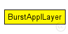
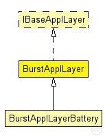

This documentation is released under the Creative Commons license
This documentation is released under the Creative Commons licenseApplication layer to test lower layer implementations
This application layer does exactly the same as the TestApplLayer. The only difference is that is sends a burst of broadcast messages instead of just one. The burst size is specified in burstSize and can be set in omnetpp.ini
See also: TestApplLayer
Author: Daniel Willkomm
The following diagram shows usage relationships between types. Unresolved types are missing from the diagram. Click here to see the full picture.
The following diagram shows inheritance relationships for this type. Unresolved types are missing from the diagram. Click here to see the full picture.
| Name | Type | Description |
|---|---|---|
| BurstApplLayerBattery | simple module | (no description) |
| Name | Type | Default value | Description |
|---|---|---|---|
| coreDebug | bool | false |
debug switch for base class (TestApplLayer) |
| debug | bool | false |
debug switch |
| headerLength | int |
length of the application message header (in bits) |
|
| burstSize | int |
size of the burst |
|
| burstReply | bool | true |
if true, send unicast replies to received broadcasts |
| Name | Direction | Size | Description |
|---|---|---|---|
| lowerLayerIn | input |
from network layer |
|
| lowerLayerOut | output |
to network layer |
|
| lowerControlIn | input |
control from network layer |
|
| lowerControlOut | output |
control to network layer |
// Application layer to test lower layer implementations // // This application layer does exactly the same as the // TestApplLayer. The only difference is that is sends a burst of // broadcast messages instead of just one. The burst size is specified // in burstSize and can be set in omnetpp.ini // // @see TestApplLayer // @author Daniel Willkomm simple BurstApplLayer like IBaseApplLayer { parameters: bool coreDebug = default(false); //debug switch for base class (TestApplLayer) bool debug = default(false); // debug switch int headerLength @unit("bit"); // length of the application message header (in bits) int burstSize; // size of the burst bool burstReply = default(true); // if true, send unicast replies to received broadcasts gates: input lowerLayerIn; // from network layer output lowerLayerOut; // to network layer input lowerControlIn; // control from network layer output lowerControlOut; // control to network layer }
This documentation is released under the Creative Commons license